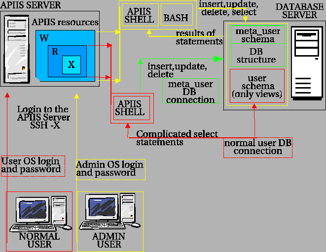

Next: Defining users
Up: The basic foundations -
Previous: APIIS core
Contents
APIIS projects
All projects based on the APIIS core have separate databases. In each of these database we have to create the meta_user account. Then the PUBLIC schema has to be removed and the database must be created in the meta_user schema1.4 which is created with the meta_user account. In result the meta_user has full access right to the database and only he can make direct modifications on the database content.
The important thing is that the meta_user name have to be exactly the same like the name of the user defined in the model_file of particular project. There is only one model_file for all users registered in the project.
The general schema how the system is implemented is shown on Figure 1.1.
Figure 1.1:
General schema for the access control system
|

|
Marek Imialek
2006-06-22